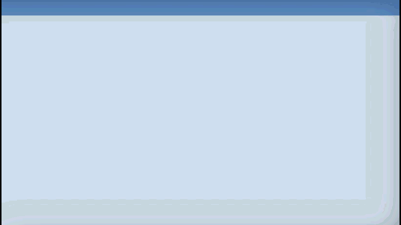

CMU 15-112: Fundamentals of Programming and Computer Science
Class Notes: Animation Part 2: Time-Based Animations in Tkinter
Note: We will only run animations in Standard Python. These examples will not run in Brython.
- Updated Starter Code
- Controller: timerFired
- Example: Changing Colors
- Example: Bouncing and Pausing Square
- Updated Starter Code
# Updated Animation Starter Code from tkinter import * #################################### # customize these functions #################################### def init(data): # load data.xyz as appropriate pass def mousePressed(event, data): # use event.x and event.y pass def keyPressed(event, data): # use event.char and event.keysym pass def timerFired(data): pass def redrawAll(canvas, data): # draw in canvas pass #################################### # use the run function as-is #################################### def run(width=300, height=300): def redrawAllWrapper(canvas, data): canvas.delete(ALL) canvas.create_rectangle(0, 0, data.width, data.height, fill='white', width=0) redrawAll(canvas, data) canvas.update() def mousePressedWrapper(event, canvas, data): mousePressed(event, data) redrawAllWrapper(canvas, data) def keyPressedWrapper(event, canvas, data): keyPressed(event, data) redrawAllWrapper(canvas, data) def timerFiredWrapper(canvas, data): timerFired(data) redrawAllWrapper(canvas, data) # pause, then call timerFired again canvas.after(data.timerDelay, timerFiredWrapper, canvas, data) # Set up data and call init class Struct(object): pass data = Struct() data.width = width data.height = height data.timerDelay = 100 # milliseconds init(data) # create the root and the canvas root = Tk() canvas = Canvas(root, width=data.width, height=data.height) canvas.pack() # set up events root.bind("Result:", lambda event: mousePressedWrapper(event, canvas, data)) root.bind(" ", lambda event: keyPressedWrapper(event, canvas, data)) timerFiredWrapper(canvas, data) # and launch the app root.mainloop() # blocks until window is closed print("bye!") run(400, 200)
- Controller: timerFired
# Timer fired is called every timerDelay milliseconds # We can use this function to effectively loop over time, # thereby simulating movement over time def timerFired(data): data.timerCalls += 1 def init(data): # The variable data.timerDelay is referenced in timerFiredWrapper # Change it to affect how often timerFired is called data.timerDelay = 100 # 100 millisecond == 0.1 seconds data.timerCalls = 0 def mousePressed(event, data): pass def keyPressed(event, data): pass def redrawAll(canvas, data): canvas.create_text(data.width/2, data.height/2, text="Timer Calls: " + str(data.timerCalls))Result:
- Example: Changing Colors
# Changes the color of the square every second def init(data): data.timerDelay = 1000 # 1 second data.squareColor = "red" def mousePressed(event, data): pass def keyPressed(event, data): pass def timerFired(data): if data.squareColor == "red": data.squareColor = "green" elif data.squareColor == "green": data.squareColor = "blue" elif data.squareColor == "blue": data.squareColor = "red" def redrawAll(canvas, data): size = 50 canvas.create_rectangle(data.width/2 - size, data.height/2 - size, data.width/2 + size, data.height/2 + size, fill=data.squareColor)Result:
 - Example: Bouncing and Pausing Square
# Draws a bouncing square which can be paused def init(data): data.squareLeft = 50 data.squareTop = 50 data.squareFill = "yellow" data.squareSize = 25 data.squareSpeed = 20 data.headingRight = True data.headingDown = True data.isPaused = False data.timerDelay = 50 def mousePressed(event, data): pass def keyPressed(event, data): if (event.char == "p"): data.isPaused = not data.isPaused elif (event.char == "s"): doStep(data) def timerFired(data): if (not data.isPaused): doStep(data) def doStep(data): # Move vertically if (data.headingRight == True): if (data.squareLeft + data.squareSize > data.width): data.headingRight = False else: data.squareLeft += data.squareSpeed else: if (data.squareLeft < 0): data.headingRight = True else: data.squareLeft -= data.squareSpeed # Move horizontally if (data.headingDown == True): if (data.squareTop + data.squareSize > data.height): data.headingDown = False else: data.squareTop += data.squareSpeed else: if (data.squareTop < 0): data.headingDown = True else: data.squareTop -= data.squareSpeed def redrawAll(canvas, data): # draw the square canvas.create_rectangle(data.squareLeft, data.squareTop, data.squareLeft + data.squareSize, data.squareTop + data.squareSize, fill=data.squareFill) # draw the text canvas.create_text(data.width/2, 20, text="Pressing 'p' pauses/unpauses timer") canvas.create_text(data.width/2, 40, text="Pressing 's' steps the timer once")Result: